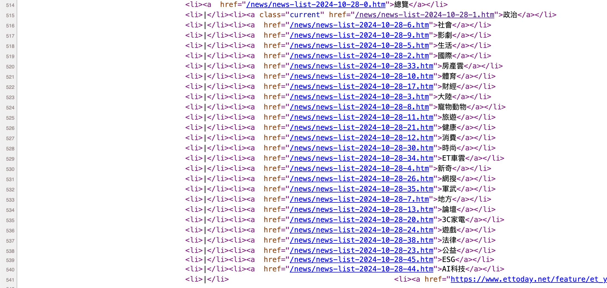
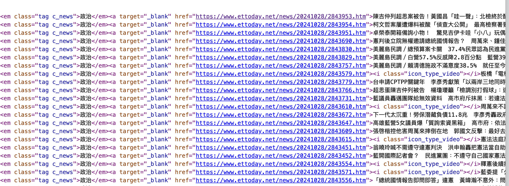
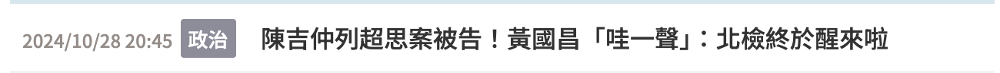
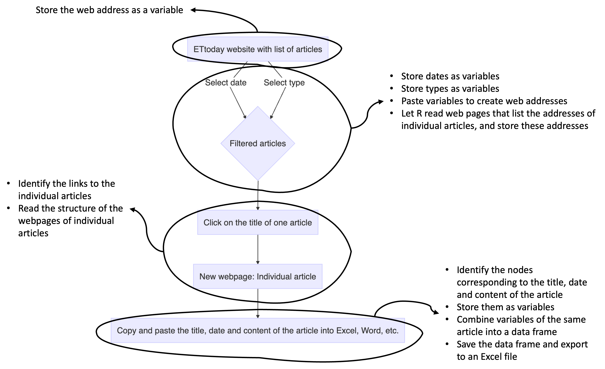

Weeks 6 & 7: Building a corpus from media platforms
1 Building your own corpus: Conceptual and technical considerations
There are many tools that we can use now to build a corpus based on data coming from the Internet, and this includes R packages. But many concepts need to be clarified before getting into the coding part, such as:
Being aware of the steps you are going through if you had to manually copy and paste the data you want into an Excel file, and document each step with as many details as possible,
Understanding the structure of a website, how to access the structure of the website, and where the information you want are,
Finally, mapping the R functions to the information you want.
These are the steps we will be going through these two weeks. We will work with one Taiwanese newspaper called “ETtoday” (https://www.ettoday.net/). We will be working with this link, which references all articles since 2011: https://www.ettoday.net/news/news-list.htm.
2 Document your own manual steps
2.1 What is the task
First, you need to be very clear about what you want to do, otherwise you can literally spend hours doing a lot of things but actually achieving nothing.
So here is your first task:
Go to the ETtoday website, and search for one article.
Describe each step you take to get to an article, and document the changes that happen regarding the address of the website.
2.2 Documentation of the manual steps
This task seems quite easy, but it is crucial. First, you went to the website by clicking on the link. Then, you selected the date of the news you were interested in. Third, you selected the type of news (politics, society, etc.). A list of articles was already there on the website, and you were just filtering them. And to get into one article, you just clicked on one of the titles below the search bar.
This procedure looks like this:
Now we will do the same, but pay more attention to the web address, and track the changes that occur. For instance, the first step is just accessing the website. The web address is “https://www.ettoday.net/news/news-list.htm”. What is the web address when you select a particular date, let’s say October 28th, 2024? And when you select a particular type of article, “politics” for example? And finally, when you choose an individual article?
Here is what we get:
First step: https://www.ettoday.net/news/news-list.htm
Second step (filtered articles): https://www.ettoday.net/news/news-list-2024-10-28-1.htm
Third step: (individual article): https://www.ettoday.net/news/20241028/2843953.htm
Think about it
- First, we can see that filtering the data changes the address of the website in a very systematic way. Now, try to change the address to access the list of articles published on September 27th, 2024. You will get something like that: https://www.ettoday.net/news/news-list-2024-09-27-1.htm
- Second, try to change the last number. You will see that it changes the type of articles.
So this means that you can filter the list of articles as you wish just by changing the web address!
- Third, if we look at the web address of the individual article, we can retrieve the date of publication of the article very easily… but it is not quite possible to guess the numbers after that.
No need to despair! The fact that this article is found in the list means that the web address of the individual article must be somewhere on the website… but where? This is the moment when it is important to understand the structure of the website.
3 Understanding the structure of the website
3.1 How to access the structure of the website?
Accessing the structure of a website is actually very easy. You just need to open the webpage, for example this one: https://www.ettoday.net/news/news-list-2024-10-28-1.htm. Then, you look for a blank space, you right-click, and you select “View Page Source” (it is possible that it will not be in English, or that the wording is different depending on the system of your computer).
Then, it will open a new page which can be very scary… but this is actually the same, just the structure of the previous page!
Here is the animated figure of these steps:

3.2 What are all these lines about?
This version of the website is really where you can find all the information that you need. For example, please have a look at lines 514 to 541 (see the image below).

This must be more familiar to you: these are the web addresses that you obtain when you filter different types of articles!
Now, please have a look at line 549… you will see that you have the web addresses of each individual article listed on the webpage!

How did I know what lines to search for?
There’s nothing magical, and I am surely not a psychic who can guess the line numbers. So how to find them? I just use the “search” function (for Windows: “ctrl + f”, for Mac: “command + f”). And then I look for some keywords, such as the names of the types of articles, or the web address of the individual articles.
3.3 Terminology of the “structural lines”
Let’s call these lines the “structural lines”. These are just lines of code used to create the webpage. There are different programming languages, but for our purpose, we will only need to look at the lines written in html language.
Let’s just have a look at line 549 and decompose it.
<div class="part_list_2">
<h3>
<span class="date">2024/10/28 20:45</span>
<em class="tag c_news">政治</em>
<a target="_blank" href="https://www.ettoday.net/news/20241028/2843953.htm">陳吉仲列超思案被告！黃國昌「哇一聲」：北檢終於醒來啦</a>
</h3>
</div>This line corresponds to this part of the website:

Now we can decompose it:
The part with “<div></div>” means that there is a block on the webpage. This block corresponds to the one where all the individual articles are listed. There are many blocks on a webpage, so we can give them different names to avoid confusing them. Here, the block is called “part_list_2”.
The part with “<h3></h3>” corresponds to one line in the block. What is between “<h3>” and “</h3>” is everything we want to put in that line. Here there are three elements:
The first element is a “<span></span>” element, and its name is “date”. What is between “<span>” and “</span>” is the text to display, here: “2024/10/28 20:45”.
The second element is an “<em></em>” element (why “em” and not “span”? “em” stands for “emphasis”, so they look different on the website). Its name is “tag c_news”.
The third element is an “<a></a>” element. This is used to write a text with a link, and the link is specified with “href”. The term “target=”_blank”” means that it opens in a new page when you click on it.
Important
This seems to be a lot and quite complicated.
So just remember this:
There are big blocks with different names (div, h3, span, etc.). Let’s call them nodes.
Inside nodes, you can specify the parameters and names specific to the nodes.
That’s all!
4 Let’s get R do the job for us!
4.1 Overview of the steps
In Section 2.2, we wrote down the several steps we have been going through to copy and paste the content of one article. In the end, we want to repeat this step many times to get the data from more than one article… and now you can imagine why it is a better idea to process through these steps automatically instead of doing it manually for weeks and months.
Think about it
If you followed this rationale, now you can guess what coding means. It is just about translating our behavior to a language that the computer can understand!
In other words, we are going to map the steps described in Section 2.2 to R functions to perform the same task. And then we will require R to repeat the same task with different web addresses.
An efficient way to be clear about the steps to proceed with when doing programming language is to translate the steps we went through manually into words that make sense for the computer. For instance, when we select the dates or article types for filtering, we actually store them somewhere as variables. This gives us the annotated figure below.

Now let’s see how to implement these steps with R.
4.2 Preliminary step: Libraries needed
For this task, we will only need four packages:
library(rvest)
library(dplyr)
library(xml2)
library(openxlsx)4.3 Step 1: Record the web addresses that list the pages of the individual articles based on the filters
The first step in our task is to record the web addresses. Let’s have a first recap:
The main address is: https://www.ettoday.net/news/news-list.htm
The web address with filters for dates and categories looks like this: https://www.ettoday.net/news/news-list-2024-10-28-1.htm
Now it is like playing lego: How to obtain the address with filters based on the first address? The answer is as follows:
"https://www.ettoday.net/news/news-list" + "-" + date + "-" + category + ".htm"Where dates are like “2024-10-28” and categoriesare just numbers. How to do so with R? Nothing easier!
- First, store the base address as a variable:
ETTodayPageUrl <- "https://www.ettoday.net/news/news-list" - Then, store the year, month and day of your interest, and paste them together. To paste, we use the function “paste0()”:
Year <- 2024
Month <- 10
Day <- 28
date <- paste0(Year,
"-",
Month,
"-",
Day)
date[1] "2024-10-28"- Now we select the category. Let’s say we want articles talking about politics, coded as “1” on ETtoday:
category <- 1- Finally, we paste these variables together to obtain the address:
## Template: "https://www.ettoday.net/news/news-list" + "-" + date + "-" + category + ".htm"
URL <- paste0(ETTodayPageUrl,
"-",
date,
"-",
category,
".htm")
URL[1] "https://www.ettoday.net/news/news-list-2024-10-28-1.htm"
Think about it
You may think that it is a complex way to do… why not writing the web address as a variable instead of pasting the elements? In other words, why not writing this instead:
URL <- “https://www.ettoday.net/news/news-list-2024-10-28-1.htm”
Think about it. Doing so, if you want the data for the whole year 2024, and two categories, it means that you will have to do the same more than 700 times… so it seems to be a simpler solution, and it is true if we are working with only one page, but not necessarily with big data!
We have the address corresponding to one page with the code above. If we want the web addresses for the whole year, we will need to repeat the code, and changing the date every time. In programming language, there is a command that tells a computer to repeat the same set of instructions for each item in a list. It is a way to automate a repetitive task. This command is called for loop.
Let’s have a look at how to apply this concept to our case.
- First, we start with the base address, as we have already done above:
ETTodayPageUrl <- "https://www.ettoday.net/news/news-list" - Then we create the List. Since we want to go through the articles published in 2024, we want Year 2024, Months from January (1) to December (12), and Days from 1 to 31 (some months do not have 31 days, but it is not crucial for our purpose). This is how we write it:
Year <- 2024
Month <- 1:12
Day <- 1:31
Year[1] 2024Month [1] 1 2 3 4 5 6 7 8 9 10 11 12Day [1] 1 2 3 4 5 6 7 8 9 10 11 12 13 14 15 16 17 18 19 20 21 22 23 24 25
[26] 26 27 28 29 30 31We have the List. Now we need the Action. What we want is a list (or table) with all the dates. To do so:
We create an empty table,
We paste Year, Month and Day to obtain the date,
We change the class of the variable to match the class of the empty table,
We add the individual date into the table
The code looks like that:
Dates_total <- data.frame(matrix(ncol = 1, nrow = 0))
# The Action is below
Dates <- paste0(Year, "-", Month, "-", Day)
Dates <- as.data.frame(Dates)
Dates_total <- rbind(Dates_total, Dates)
# A look at the results
Dates_total Dates
1 2024-1-1
2 2024-2-2
3 2024-3-3
4 2024-4-4
5 2024-5-5
6 2024-6-6
7 2024-7-7
8 2024-8-8
9 2024-9-9
10 2024-10-10
11 2024-11-11
12 2024-12-12
13 2024-1-13
14 2024-2-14
15 2024-3-15
16 2024-4-16
17 2024-5-17
18 2024-6-18
19 2024-7-19
20 2024-8-20
21 2024-9-21
22 2024-10-22
23 2024-11-23
24 2024-12-24
25 2024-1-25
26 2024-2-26
27 2024-3-27
28 2024-4-28
29 2024-5-29
30 2024-6-30
31 2024-7-31So far it gives us an incomplete list of dates. This is because we need to add the third element: The Loop. Here is my way to create the loop:
We have the Action for one subset of the data only, which means that we need to have a process for each day, and each month. The rationale goes like this:
Loop 1: “For Day number 1, please assign Month number 1, and Year 2024”
Loop 2: “For Day number 2, please assign Month number 1, and Year 2024”
… …
Loop 31: “For Day number 31, please assign Month number 1, and Year 2024”
Loop 32: “For Day number 1, please assign Month number 2, and Year 2024”
This means that we have a first round of Loop for Day, followed by a second round of Loop for Month, followed by a third round of Loop for Year.
This is why in the code below, there are 3 for loop commands, and different variables are assigned to them:
Dates_total <- data.frame(matrix(ncol = 1, nrow = 0))
for (a in 1:length(Day)){
for (b in 1:length(Month)){
for (c in min(Year):max(Year)){
Dates <- paste0(c, "-", b, "-", a)
Dates <- as.data.frame(Dates)
Dates_total <- rbind(Dates_total, Dates)
}
}
}
Dates_total <- as.character(Dates_total$Dates)
knitr::kable(head(Dates_total)) # Use of the kable() function from the 'knitr' package to have a prettier output| x |
|---|
| 2024-1-1 |
| 2024-2-1 |
| 2024-3-1 |
| 2024-4-1 |
| 2024-5-1 |
| 2024-6-1 |
Now we apply the same logic to add the Categories. Let’s say we want articles about “Politics” and “Society”.
In that case, the List is about categories coded as “1” and “6”
The Action is to paste the different parts of the web address
The Loop is to paste all the dates (372 dates) to the 2 categories.
This gives the following code:
# "6.htm" = "Society"
# "1.htm" = "Politics"
# "2.htm" = "International"
# "5.htm" = "Life"
Category_total <- c("6", "1")
URL_total <- data.frame(matrix(ncol = 1, nrow = 0))
for (a in 1:length(Category_total)){
URL_temp <- paste0(ETTodayPageUrl, "-", Dates_total, "-", Category_total[a], ".htm")
URL_temp <- as.data.frame(URL_temp)
URL_total <- rbind(URL_total, URL_temp)
}
URL_total <- as.character(URL_total$URL_temp)
knitr::kable(head(URL_total)) # Use of the kable() function from the 'knitr' package to have a prettier output| x |
|---|
| https://www.ettoday.net/news/news-list-2024-1-1-6.htm |
| https://www.ettoday.net/news/news-list-2024-2-1-6.htm |
| https://www.ettoday.net/news/news-list-2024-3-1-6.htm |
| https://www.ettoday.net/news/news-list-2024-4-1-6.htm |
| https://www.ettoday.net/news/news-list-2024-5-1-6.htm |
| https://www.ettoday.net/news/news-list-2024-6-1-6.htm |
4.4 Step 2: Retrieve the URLs of the individual articles
Now we have the web addresses that list the webpages of individual articles, filtered by dates and categories. The next step is to find the web addresses of these individual articles. There are several sub-steps:
First, R needs to read the webpage with the list of addresses. Please be aware that when R reads the webpage, we are talking about the structure of the webpage!
The R function to do so is called “read_html()”.
We write the address of the webpage to read between the parentheses. Here, we already have the list from the previous step, and we stored them under the variable “URL_total”.
We just test with only one page for the moment. This is why in the code below, we write “URL_total[1]”. It means “the first data in the list called URL_total”.
IndPage <- read_html(URL_total[1])
IndPage{html_document}
<html lang="zh-Hant" prefix="og:http://ogp.me/ns#" xmlns:wb="http://open.weibo.com/wb" itemscope="" itemtype="http://schema.org/WebSite">
[1] <head>\n<meta http-equiv="Content-Type" content="text/html; charset=UTF-8 ...
[2] <body>\r\n\n<!-- FB Quote 選取文字分享 開始-->\n<div class="fb-quote"></div>\n<!- ...- The second step is to retrieve the information that we need. We have already done that in Section 3, and if you remember well, we found the line corresponding to the data we want:
<div class="part_list_2">
<h3>
<span class="date">2024/10/28 20:45</span>
<em class="tag c_news">政治</em>
<a target="_blank" href="https://www.ettoday.net/news/20241028/2843953.htm">陳吉仲列超思案被告！黃國昌「哇一聲」：北檢終於醒來啦</a>
</h3>
</div>If you need to describe, you have to say something like that:
"The address of the individual article is listed after the 'href' attribute, which is in the <a> node, which is in the <h3> node, which is in the <div> node whose class is 'part_list_2' ".How to translate into R? We will use two functions:
| Function | Use | Example in our case |
|---|---|---|
| html_nodes() | Used to identify the elements within a node | html_nodes(“div”) = retrieves all the nodes starting with “div” html_nodes(“div.something”) = retrieves only the nodes starting with “div”, where ‘class = “something”’ (in other words, it filters specific “div” nodes) |
| html_attr() | Used to identify the content of the specification of a node | html_attr(“class”) = retrieves the element written after “class”. For example, in the case below, it will return “NameOfTheClass”. <div class=“NameOfTheClass”> |
Now that we know how to use the code, we can translate the description we wrote as follows:
news_url <- IndPage %>%
html_nodes("div.part_list_2") %>%
html_nodes("h3") %>%
html_nodes("a") %>%
html_attr("href")
knitr::kable(head(news_url)) # Use of the kable() function from the 'knitr' package to have a prettier output on the website| x |
|---|
| https://www.ettoday.net/news/20240101/2655300.htm |
| https://www.ettoday.net/news/20240101/2655313.htm |
| https://www.ettoday.net/news/20240101/2655305.htm |
| https://www.ettoday.net/news/20240101/2655303.htm |
| https://www.ettoday.net/news/20240101/2655277.htm |
| https://www.ettoday.net/news/20240101/2655264.htm |
Think about it
Let’s say that you wanted the date or the category of the articles, how would you change this code?
Congratulations! You have the list of the addresses from one page! Now we need to repeat the same process to the other 743 lists… and anytime you need to repeat a task over and over, this means for loop command! Here are the elements we need:
First, we create an empty data frame in which we will store all the web addresses of the individual articles
The List is the addresses of the webpages where we can find the individual articles filtered by date and category, which we stored in the variable called “URL_total”,
The Action is to find the web addresses of the individual articles, as we did just before,
The Loop is to perform the Action for all the filtered pages, and to paste the individual web addresses in the empty data frame we just created.
This gives the following code:
## This step can last several minutes
URL_IndArticles <- data.frame(matrix(ncol = 1, nrow = 0))
for (i in 1:length(URL_total)){
IndPage <- read_html(URL_total[i])
news_url <- IndPage %>%
html_nodes("div.part_list_2") %>%
html_nodes("h3") %>%
html_nodes("a") %>%
html_attr("href")
news_url <- as.data.frame(news_url)
URL_IndArticles <- rbind(URL_IndArticles, news_url)
}- We are not completely done. It is possible that for some reasons, some articles are repeated. So the next step is to remove all the repeated web addresses, by keeping only one instance. Here is how we do that: We use the ‘unique()’ function:
article_overview_unique <- unique(URL_IndArticles)
knitr::kable(head(article_overview_unique)) # Use of the kable() function from the 'knitr' package to have a prettier output on the website| news_url |
|---|
| https://www.ettoday.net/news/20240101/2655300.htm |
| https://www.ettoday.net/news/20240101/2655313.htm |
| https://www.ettoday.net/news/20240101/2655305.htm |
| https://www.ettoday.net/news/20240101/2655303.htm |
| https://www.ettoday.net/news/20240101/2655277.htm |
| https://www.ettoday.net/news/20240101/2655264.htm |
4.5 Step 3: Retrieve the titles, date, types and content of the articles
We are already half-way to the end! Now that we have the list of the web addresses of the articles published in 2024, we can scrape their content in addition to other information we might need, including the date of publication and the title of the article.
Test with one article
As in the previous step, it is safer to test first with one article. The reason is that as some steps require quite a long time to be completed, so it is better to identify potential problems before by testing with only one subset of the data. Again, we have to go through different sub-steps:
- First, we use the “read_html()” function to read the structure of the web page of one article:
OneArticle <- read_html(article_overview_unique$news_url[1])- After “playing hide and seek” with the structure of the page, we can identify the nodes under which the content we want can be found. Let’s start with the date of publication, which is here:
<time class="date" itemprop="datePublished" datetime="2024-01-01T22:47:00+08:00"> 2024年01月01日 22:47 </time>We can see that it is inside the <time> node (between <time> and </time>). Therefore, in addition to the “html_nodes()” function, we specify that we want the text within, hence the use of “html_text()” function. The option “trim = TRUE” is just to remove coding format in the text.
Finally, we store this piece of information in the variable called “news_time”.
# Date of publication
news_time <- OneArticle %>%
html_nodes("time") %>%
html_text(trim = TRUE)- And now we proceed the same way for the category of the article, and its title:
# Category of news
news_class <- OneArticle %>%
html_nodes(".part_menu_5") %>%
html_nodes("strong") %>%
html_text(trim = TRUE)
# title
news_title <- OneArticle %>%
html_nodes("h1") %>%
html_text(trim = TRUE)
# content
news_body <- OneArticle %>%
html_nodes('div[itemprop="articleBody"]') %>%
html_text(trim = TRUE)- Once it is done, we store these five variables in the same table:
article <- (data.frame(time = news_time,
class = news_class,
title = news_title,
body = news_body,
url = article_overview_unique$news_url[1]))- And now we can have a look at what we get with one article:
# Use of the paged_table() function from the 'rmarkdown' package to have a readable output
rmarkdown::paged_table(article)Repeat the same process with all the articles
And if you were following the rationale of these two weeks’ tutorial, you know that when we repeat the same action again and again, it is a better idea to use the for loop command:
First, we create an empty data frame in which we will store all the information we want. Let’s call it “Article_total”.
The List is the addresses of the individual articles, which we stored in the variable called “article_overview_unique$news_url”,
The Action is to find the date of publication, the category of article, the content of the article, its title, and its web address, as we did just before,
The Loop is to perform the Action for individual articles, and to include them in the empty data frame we just created.
You will remark something new: “tryCatch({”, and at the end “}, error=function(e){cat(”ERROR :“,conditionMessage(e),”“)})”. This is because the for loop command stops anytime an error occurs (which can happen with a broken link, missing information on one article, etc.).
Wrapping the Action with the “tryCatch({})” function is just to say that the for loop can ignore the errors and keep proceeding to the next article,
The “error=function(e){cat(”ERROR :“,conditionMessage(e),”“)})” part is just to report the error message in the console.
This gives the following code:
Article_total <- data.frame()
for (j in 1:length(article_overview_unique$news_url)){
tryCatch({
temp <- read_html(article_overview_unique$news_url[j])
# Date of publication
news_time <- temp %>%
html_nodes("time") %>%
html_text(trim = TRUE)
# Category of news
news_class <- temp %>%
html_nodes(".part_menu_5") %>%
html_nodes("strong") %>%
html_text(trim = TRUE)
# title
news_title <- temp %>%
html_nodes("h1") %>%
html_text(trim = TRUE)
# content
news_body <- temp %>%
html_nodes('div[itemprop="articleBody"]') %>%
html_text(trim = TRUE)
# url
news_url <- temp %>%
html_nodes("div.block div.block_content div.part_list_2 h3") %>%
html_nodes("a") %>%
html_attr("href")
Article <- (data.frame(time = news_time,
class = news_class,
title = news_title,
body = news_body,
url = article_overview_unique$news_url[1]))
Article_total <- rbind(Article_total, Article)
}, error=function(e){cat("ERROR :",conditionMessage(e), "\n")})
}
# Use of the paged_table() function from the 'rmarkdown' package to have a readable output
rmarkdown::paged_table(Article_total)
Be careful!!
This step can take a very long time! For me, scrapping the articles published in 2024 in these two categories can take 4 hours! You cannot use R when it is working. But you can still use your computer for any other task. So plan accordingly!
4.6 Step 4: Save the data into Excel and R files
The last steps are straightforward: We export the dataset into an Excel document in addition to an RData file:
write.xlsx(Article_total, "ArticleETToday_CorpusCourse.xlsx")save(Article_total, file = "ArticleETToday_CorpusCourse.Rdata")5 Markdown document, PDF output file, RData and Excel files of the scraped data
You can find the pre-filled Markdown document of this section here. Here is the PDF output of the same document.
Please note that it takes several hours to run the Markdown document. In the end it will download data from more than 20000 pages. In case, the RData output file can be downloaded here. The Excel file corresponding to this dataset is here.